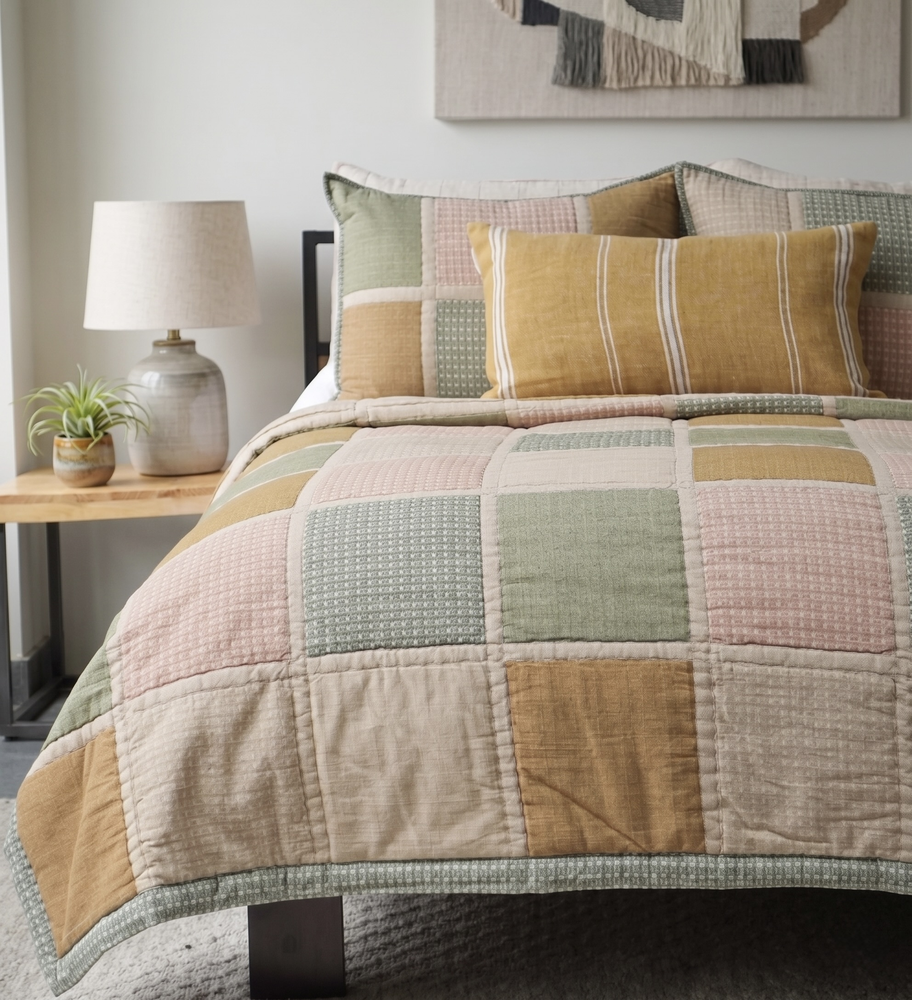
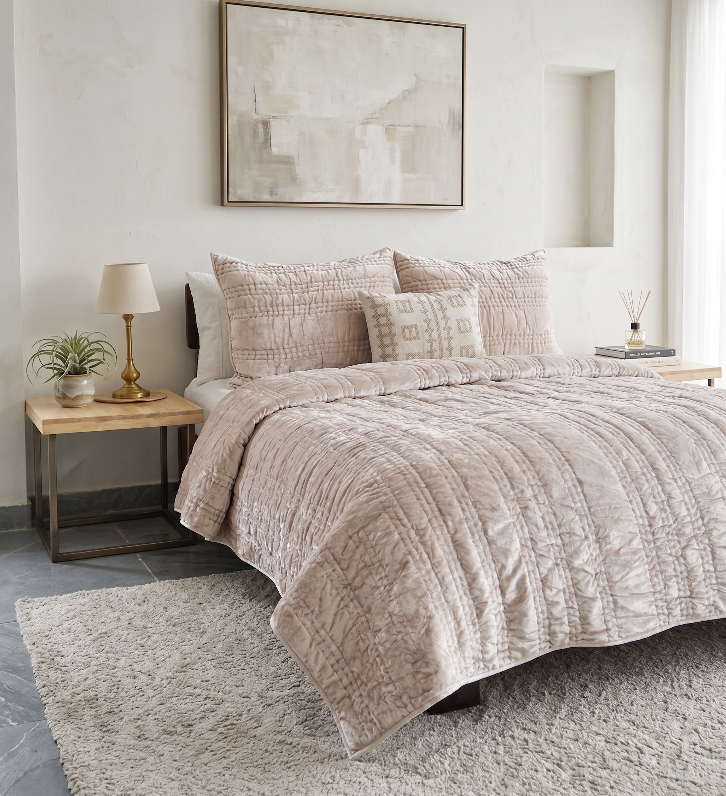
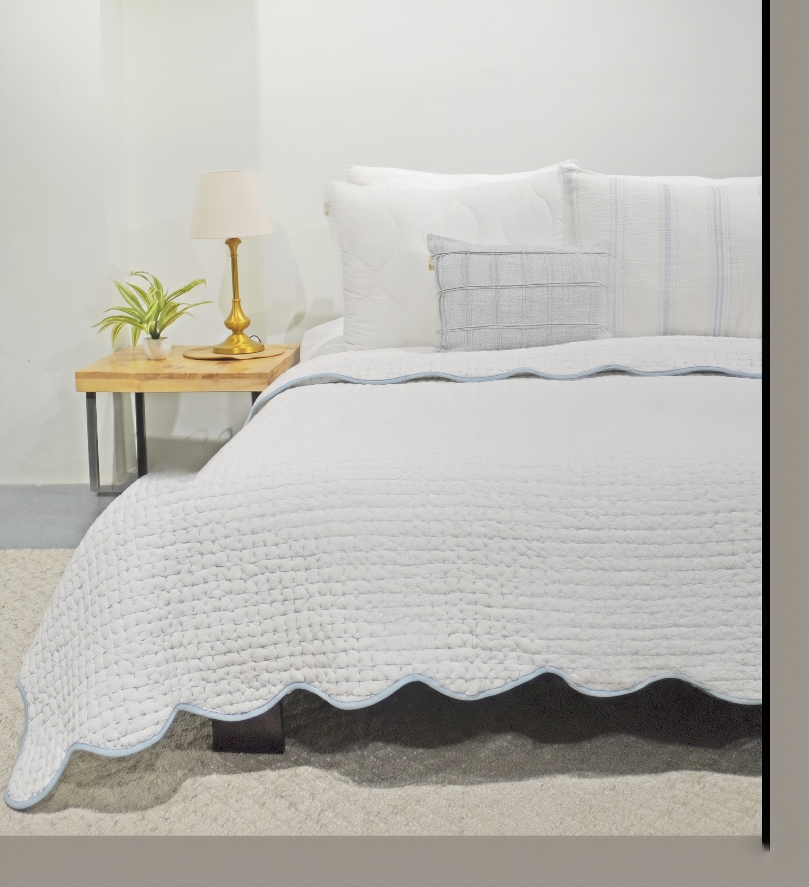

Bedding
Quilts
Hand-stitched quilts that carry the legacy of Indian kantha and patchwork traditions — reimagined for contemporary retail. From graphic colour-block designs to tone-on-tone linen textures, each quilt is crafted to be the centrepiece of the bed. Available in standard and oversized (OS) dimensions.

AH-QL-24-1205
Heritage Patchwork Quilt
A joyful patchwork of blush pink, sage green, mustard and natural linen blocks — each in a different surface texture from dotted to plain to stripe. Artisan-crafted with matching quilted shams. A perennial bestseller for lifestyle retail.

AH-QL-24-1206
Scallop Border Patchwork Quilt
Broad washed colour blocks in dusty rose, terracotta, sage and mustard, finished with a distinctive scalloped border. The kind of quilt that transforms a bedroom into a sanctuary — loved by lifestyle and boutique hotel buyers alike.

AH-QL-24-1211
Ombré Stripe Quilted Bedspread
Horizontal panels of dusty blush, warm taupe and ivory cotton, box-quilted throughout for a clean contemporary finish. Effortlessly neutral and widely versatile — a natural for premium bedding retail programmes.

AH-QL-24-1221 · Oversized
Seersucker Geo Quilt — OS
A serene oversized quilt in warm beige-blush, with a subtle abstract geometric print worked through a crinkled seersucker cotton. Quietly luxurious — the textures shift beautifully with the light. Supplied with matching shams.
.png)
AH-QL-24-1222 · Oversized
Natural Crinkle Box Quilt — OS
Pure organic cotton in a warm natural/oatmeal tone, crinkled for a relaxed linen-like drape and quilted in generous square blocks. Hotel-quality simplicity at its finest — a go-to for premium hospitality and clean-aesthetic retail.

AH-QL-24-1224
Marigold Diamond Quilt
Warm marigold-yellow cotton diamond-quilted throughout, with a decorative hand-embroidered floral chain border. Matching shams with ornate medallion embroidery complete the set. Sunshine warmth for bedroom collections that tell a story.

AH-QL-24-1226 · Oversized
White Scallop Quilted Coverlet — OS
Crisp hotel-white cotton with an allover box stitch quilt pattern, finished with a delicate sky-blue scalloped border. Clean, classic and endlessly versatile — the oversized drop makes it perfect for hospitality, boutique hotels and luxury retail.

AH-QL-24-1227
Tonal Botanical Quilt
Off-white cotton with a tonal botanical quilting pattern — florals and foliage rendered entirely in raised stitching, visible through light and shadow alone. Airy, refined and quietly luxurious. Supplied with co-ordinating shams.